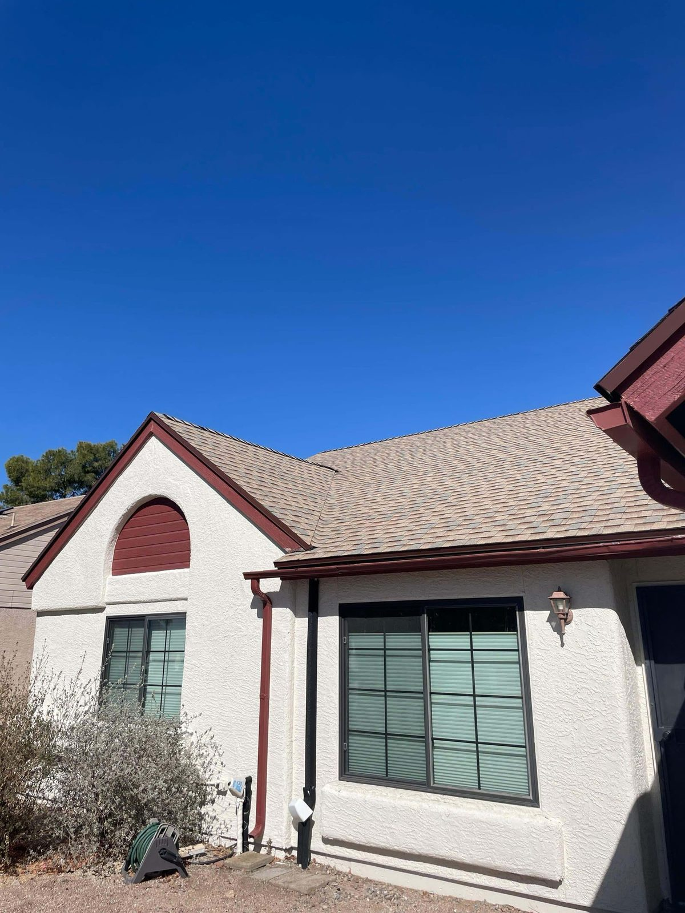

Shingle Roofing · Tucson, AZ
Shingle Roof Replacement & Installation in Tucson
Architectural shingles are the quick, affordable way to a good-looking, dependable roof. We install and replace shingle roofs all over Tucson with heat-rated products and clean work.
- Architectural shingles
- Shingle roof replacement
- Affordable & fast install
- Manufacturer warranties
Shingle Specialists
The budget pick, done so it lasts
Asphalt shingles are still the most popular roof in the country, and for good reason. They're affordable, they go on quick, and the newer architectural shingles look sharp and hold up well, even in rough climates.
The catch out here is the heat. We use quality, heat-rated architectural shingles and put real attention into the ventilation and underlayment, so your roof goes the distance instead of baking out early.
- Architectural (dimensional) shingles
- Heat-rated products for the desert
- Proper ventilation & underlayment
- Fast installs, clean job sites
Architectural Shingles
Dimensional shingles with depth, durability and great curb appeal.
Shingle Replacement
Full tear-off and fresh shingle systems for aging or storm-worn roofs.
Warranty-Backed
Manufacturer product warranties plus our workmanship guarantee.
Built for Heat
Helping shingles survive the Tucson sun
Shingle roofs can die young out here if whoever put it on didn't think about the heat. Granule loss, curling, cracking, all of that speeds up when the attic runs hot and the underlayment was an afterthought.
So we sweat the stuff that makes a shingle roof last in this climate: balanced attic ventilation, good high-temp underlayment, and putting it on the right way. That's what gets you the full life out of it.
- Balanced attic ventilation
- High-temp underlayment
- Correct nailing & sealing
- Quality, heat-tolerant shingles
Common Problems
Shingle problems we see on Tucson roofs
Shingles tell you when they're done, if you know what to look for. Here's what we see most often on Tucson shingle roofs and what each one usually means. The first two point to a roof near the end of its life. The last two can often be repaired if the rest of the roof is still sound.
Replacement
Shingle roof replacement in Tucson, start to finish
Most shingle work we do in Tucson is a full replacement: the old roof comes off, we check the decking, lay high-temp underlayment and new flashing, then put down architectural shingles with the ventilation sorted so the next roof doesn't bake out early. Most houses are done in two to four days.
Manufactured homes, hail-hit roofs and insurance jobs each have their own wrinkles. We've written those up so you know what to expect before we're on the ladder.
Shingle roof replacement in Tucson: what homeowners should know Replacing a shingle roof on a manufactured home GAF vs Owens Corning shingles, honestly compared Replacing a tile or metal roof instead? Start here
Tucson Specifics
Shingle roofs in Tucson: heat, monsoon wind and where they make sense
Shingle gets a bad rap in Arizona, and most of that comes from roofs that were installed like this was a mild climate. A dark shingle over a sealed-up attic can run far hotter than the outside air, and that's what cooks the asphalt out early. Lighter colors, shingles rated for solar reflectance, ridge and intake vents that actually move air, and high-temp underlayment all add years to the roof.
Monsoon wind is the other test. Gusts out ahead of a storm get under shingles whose seal strips never bonded, and a few lifted tabs turn into a bare patch by the next storm. Proper nailing and sealed edges are what hold a shingle roof together in that wind, and they're the first things a rushed install skips.
Where you see shingle in Tucson: older central and east side neighborhoods, manufactured homes, steeper roofs out toward Vail, and plenty of homes in Marana and Sahuarita where the HOA allows it. In the Foothills and most tile HOA communities, tile is expected, and we'll tell you up front if shingle isn't going to get past your HOA so you don't spend time on an estimate for a roof you can't build.
After a hail or wind storm we document the roof with photos before anything is touched, so you have what you need for the insurance conversation. We can't promise what a claim will pay, but the paperwork will be right.
- Lighter, reflective shingle colors
- Balanced ridge and intake ventilation
- High-temp underlayment under the shingles
- Nailing and sealing done for monsoon wind
- Straight answers on tile-only HOA neighborhoods
- Hail and wind documentation for insurance
Related Guides
More shingle roof guides
Planning a shingle job? These cover what it costs, when shingles are worn out, and why attic ventilation matters so much in the Tucson heat.
Shingle roof replacement cost in Tucson (2026) How long shingles last in Arizona heat, and other questions When to replace roof shingles: the warning signs A new shingle roof with solar attic vents in Tucson
Where We Work
Shingle roof replacement across the Tucson area
We replace and install shingle roofs across the metro: central and east Tucson where shingle is common on older homes, Marana and Sahuarita where a lot of subdivisions allow it, the steeper roofs out in Vail, and Oro Valley and the Foothills where it's less common but we still get the call. Each area page covers the roofs we see there.
Roofing in Tucson Roofing in Oro Valley Roofing in Marana Roofing in Sahuarita and Green Valley Roofing in Vail
See Our Work
See shingle roofs we've put on around Tucson
We post photos from our jobs as they happen, so you can see real shingle roofs we've replaced on Tucson homes, not catalog pictures. While your roof is in progress you get a daily update with photos of the tear-off, the decking and the new roof going on. Our customers rate us 5.0 on Google across 55 reviews.
How It Works
Our Roofing Process
Quote
We assess your roof and provide a clear written shingle roofing estimate.
Tear-Off
Old roofing removed and the decking inspected for damage.
Install
Underlayment, flashing, ventilation and architectural shingles installed to spec.
Cleanup & Warranty
Magnetic nail sweep, full cleanup and warranty documentation.
From a real inspection
What hail damage actually looks like on shingles
An Owens Corning architectural shingle roof peppered with hail impacts. You can see where the marks stop beneath the solar panel and pick back up past it.
FAQ
Roofing Questions, Answered
Still wondering about something? Call us at 520-753-1758 — straight answers, no pressure.
Ask Us DirectlyHow long does a shingle roof last in Tucson?
Good architectural shingles usually run 15 to 25 years out here. Whether you hit the high end of that comes down to attic ventilation and underlayment more than anything.
How much does a new shingle roof cost in Tucson?
Shingle's the most budget-friendly way to re-roof. The final number depends on the size and how steep it is. Estimates are free and itemized, and we do financing.
Are shingles a good choice for Arizona?
They can be, as long as they go on right with heat-rated products, good ventilation and quality underlayment. We'll help you weigh shingle against tile and metal for your particular house.
What are architectural shingles?
Architectural, also called dimensional, shingles are thicker and layered, so they've got depth and shadow lines and a richer look. They're also a good bit tougher than the old flat 3-tab shingles.
Can you replace just part of my shingle roof?
We can do a spot repair, sure, but on an older roof a full replacement usually gives you more for your money down the road. We'll give you an honest read after we look at it.
Should I repair or replace a shingle roof with hail damage?
Depends on how much of the roof got hit and how old it is. Hail bruises knock the granules loose, and the bare asphalt under them breaks down fast in our sun, so scattered hits across a roof that's already 15 years old usually point to replacement. A handful of hits on a newer roof can be repaired. We document it either way so you can make the call with your insurance company.
What color shingle is best for Tucson heat?
Lighter colors run cooler, plain and simple. If your HOA wants a darker roof, some manufacturers make reflective versions of their darker colors that give back part of that advantage. We'll walk you through the options and what each one means for your attic temperature.
Do you install GAF shingles?
Yes. We're a GAF-certified contractor, and we've also written up an honest comparison of GAF and Owens Corning so you can see how the two stack up before you pick.
How long does a shingle roof replacement take in Tucson?
Most houses are done in two to four days. During monsoon season we only open up what we can dry in the same day, so a stormy week can stretch that a bit, but your house never sits uncovered overnight.
Need a shingle roof or replacement?
Affordable, fast, and built for the heat. Get your free written shingle roofing estimate.
Let's Talk
Let's Take a Look at Your Roof
Tell me what's going on up there — a leak, storm damage, an old roof that's seen better days, or a full replacement — and we'll get you on the books for a free inspection.